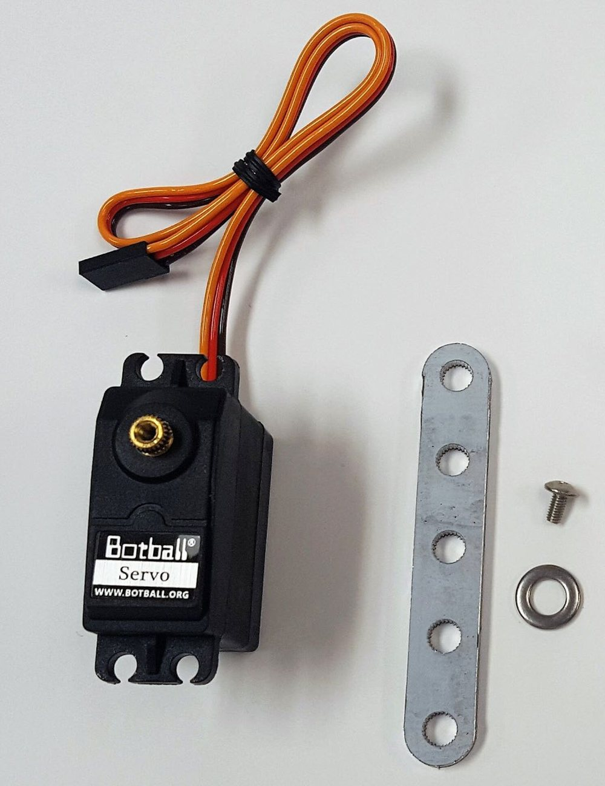

Unit 3 · Big Idea 2
Smooth Operator
Student Lab · Safe, Smooth Servo Motion
Student PIN:
Overview
Last lab you found your servos' safe limits — but right now, nothing stops you from typing a dangerous number by accident. Today you'll build two functions, move_arm and move_claw, that protect the servo automatically. Then you'll make them move slowly and smoothly, one tiny step at a time — because a cube balanced on a stack will topple if the arm jerks. By the end you'll stack a cube on the pallet with smooth, controlled motion.
Core Insight
A good function does more than move the servo — it guards against bad values, and it controls how the motion happens. Fast and jerky knocks the stack over; slow and smooth places it gently.
By the end of this activity you will be able to:
- Write a function that clamps a value so it can never exceed the safe range.
- Read a servo's current position with
get_servo_position. - Move a servo smoothly by stepping two ticks at a time in a loop, with a one-tick final move when needed.
- Experiment with timing to control how fast or smooth the motion is.
You'll reuse your values from last lab
Keep your ARM_MIN, ARM_MAX, CLAW_OPEN, and CLAW_SHUT from Big Idea 1 handy — you'll use them again here.
Phase 1 — Concept: A Function That Protects Itself


Right now, you have to remember not to type a dangerous servo number. That's risky — one typo could burn out a servo. A better idea: build a function that fixes any out-of-range value before it ever reaches the servo. This is called clamping.
Note: The single line if statement is a shorthand way to write an if statement; that's why you don't see any curly brackets after "if". This only works when the instructions inside the curly brackets is a single line, not multiple.
After these two lines, position is guaranteed to be inside your safe range — no matter what number came in. Even if someone asks for 3000, the servo only ever sees ARM_MAX.
Why is it safer to build the limits into the function than to just remember them in your head each time you call set_servo_position?
Phase 2 — Build: move_arm and move_claw (Clamped)
Build both functions with clamping. They take the position you want, fix it if it's unsafe, then move. Prototype above main(), definitions below — your usual structure.
Note: this assumes CLAW_OPEN is the smaller number and CLAW_SHUT the larger. If yours are the other way around, swap them in the two if lines so the bigger value is the high clamp.
Test it: call move_arm with a number way above ARM_MAX. What does the arm actually do? Why didn't it strain?
Phase 3 — Concept: Smooth, One Step at a Time
Right now set_servo_position sends the servo to the target as fast as it can — a sudden jerk. That jerk can knock over a cube you're trying to stack. To move smoothly, you creep there two ticks at a time, with a tiny pause between steps.
Why two ticks — and why store the reading?
A one-tick command is too small to make the servo actually move, so these functions normally step by two ticks. Each call to get_servo_position asks the controller for another reading; calling it several times during every loop can overload the controller. Store the reading in current_position, reuse that variable for the comparisons and next command, then refresh it once at the end of the loop.
A new command lets you read the servo's current spot:
With that, a loop can walk the servo to its target one step at a time — usually moving +2 if it's below the target or −2 if it's above. When the target is only one tick away, it moves that final tick directly so it cannot skip over the target:
Because the loop updates current_position after each step, it figures out which way to go on its own. You never tell it where it started — only where to end.
The loop decides to step up or down by reading get_servo_position. Why does this mean you don't need to tell the function the servo's starting position?
Phase 4 — Build: Smooth move_arm and move_claw
⚠ Keep the clamp
The smooth version still clamps first. Clamp the target into the safe range, then step toward it. That way the loop can never walk the servo past a safe limit.
Rewrite both functions to clamp, then step smoothly to the target. Start with msleep(1) in the loop.
Run it and watch the arm. How is the motion different from last lab's instant set_servo_position? Describe what you see.
Phase 5 — Experiment: Tune the Timing
The msleep inside the loop controls how fast each step happens — and so how fast and smooth the whole motion is. Try three values and feel the difference. Use the same arm move (say, ARM_MIN to ARM_MAX) each time so it's a fair test.
| msleep in loop | How fast did the arm move? | How smooth / steady? (cube safe?) |
|---|---|---|
1 ms | ||
2 ms | ||
3 ms |
As the msleep got bigger (1 → 2 → 3 ms), what happened to the speed? What happened to the smoothness? Which felt best for carrying a cube?
Why does a longer pause between single steps make the motion slower and gentler at the same time?
Phase 6 — Apply: Stack a Cube on the Pallet
Now put it to work. Using your smooth move_arm and move_claw, pick up a cube and place it on the pallet — gently enough that it stays put. Pick the timing that worked best in Phase 5.
Measure the lift
A servo position is a measurement — and so is the cube's real height. Record how high off the table the cube sits at each stage, so you can see your arm positions turn into real-world height.
| Stage | Cube height off the table (inches) |
|---|---|
Cube on the table (start) | |
Cube lifted (arm raised) | |
Cube placed on the pallet |
Stacking Log
| Try | What happened (did the cube stay on the pallet?) | What you adjusted |
|---|
Did smooth motion help the cube stay on the pallet compared to a sudden move? Why would a jerky arm knock it off?
Phase 7 — Connect & Reflect
AI Literacy Thread
Intelligent systems control their actions smoothly and safely, not just quickly.
A robot that slams its arm to a position is fast but useless for delicate work. Real systems — a robot arm placing a chip on a circuit board, a crane lowering a load, a surgical tool — move smoothly and within safe limits on purpose. You built both of those ideas into your functions: the clamp keeps the motion safe, and the step loop keeps it smooth. That's what separates a tool that works from one that breaks things.
Complete the reflection on your own.
1. What does it mean to clamp a value? How do your move_arm/move_claw functions protect the servo?
2. Explain how the step loop moves the servo smoothly. Why doesn't it need a starting position?
3. What did changing the msleep (1, 2, 3 ms) do to the motion? What's the trade-off between speed and smoothness?
4. Complete in 2–3 sentences: "Intelligent systems control their actions smoothly and safely, not just quickly. This means that to place a cube without knocking it over, a robot must..."
Extension Challenges
Finished early? Try one or more of these.
Extension A — Step by More Than One
- Change the step from
+ 2to+ 4(and- 4). How would you adjust the near-target check so the loop cannot skip over its target? What happens to speed and smoothness?
Extension B — Stack Two Cubes
- Stack a second cube ON TOP OF the first. Does smooth motion matter even more with a taller stack? What did you have to change?
Extension C — A Speed Argument
- Imagine
move_armcould also take a speed (themsleepvalue) as a second input. Why might you want fast motion sometimes and slow motion other times in the same mission?
Extension D — Looking Ahead: Your Toolbox Is Growing
- You now have
move_armandmove_clawthat you'll want in every future mission. Wouldn't it be nice to write them once and reuse them everywhere, instead of copying them into each program? Next lab, you'll do exactly that — build a library.
When you are finished, press the button to turn in your work and save a copy.
KIPR · Botball Explorer · Unit 3 Big Idea 2 — Student Lab